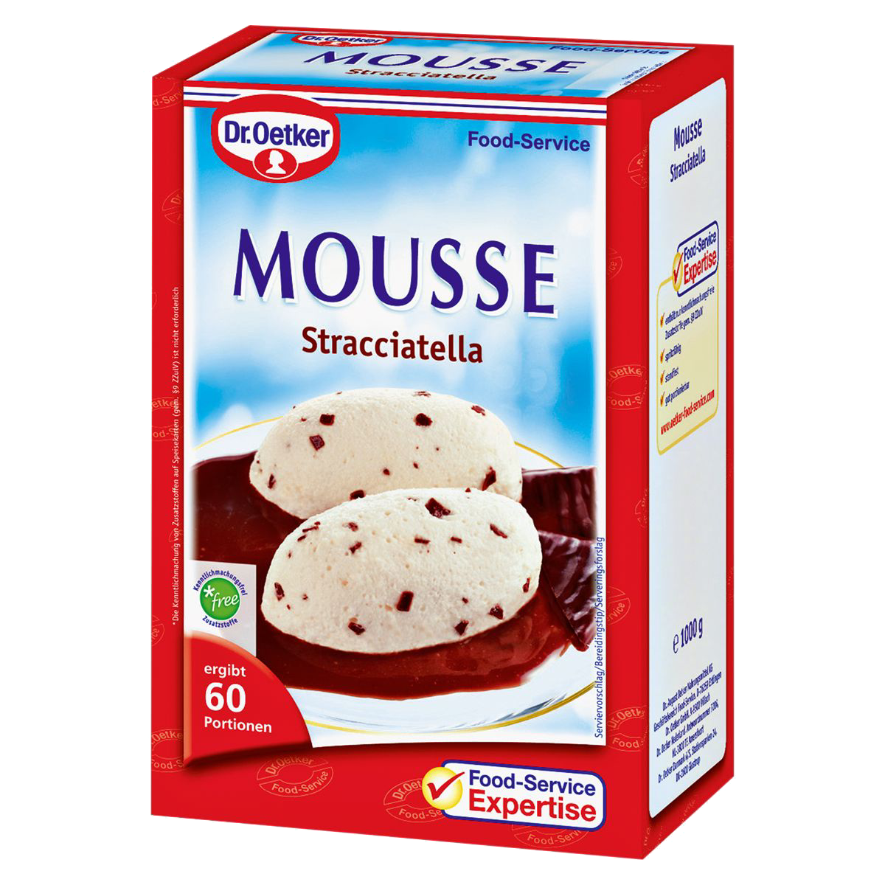

NDC { OSLO }
NDC { OSLO }
How we almost delivered 100t
of stracciatella Mousse



|
99.999 x
|
| 3,5l 🥛 / unit | => | 450m³ mix |
| 1:4 | => | 1800m³ mix |
6.000.000 portions
with 10bar
in 15h
Why would we almost deliver 100t of Stracciatella mousse?
When
What
Where
Why
| Bad | 1574690314 Success |
| Good | 1574690314 dan12345 GET /checkout/basket/ credit.payments.io {...} |
When
What
Where
Why
JSON and UIDs
{
timestamp:
1574690314
user:
dan12345
http:
GET
endpoint:
/checkout/basket/
service:
credit.payments.io
message:
{...}
uid:
tu-a8c3df-e2c7ba
}
Any observed statistical regularity will tend to collapse once pressure is placed upon it for control purposes.
Charles Goodhart, 1975
Reporting
Data
People
Definition
Function
Criteria
Customers
Goal
Question
Photo Credits
- Tarte by Jordane Mathieu on Unsplash
- Firefighter by Tim Eiden on Pexels
- Logs by Mildly Useful on Unsplash
- Books by Jason Leung on Unsplash
- Cockpit by Mitchel Boot on Unsplash
- Metrics by Luke Chesser on Unsplash
- Moose by Shivam Kumar on Unsplash
- Camera by Shivam Kumar on Unsplash
and
:
@bjoern.wendland
@tbsschroeder
@wearemetronom
@tbsschroeder
@wearemetronom
#METRONOMians
#passion
#ambition
#purpose
#passion
#ambition
#purpose
🦌 https://cutt.ly/moose 🍧